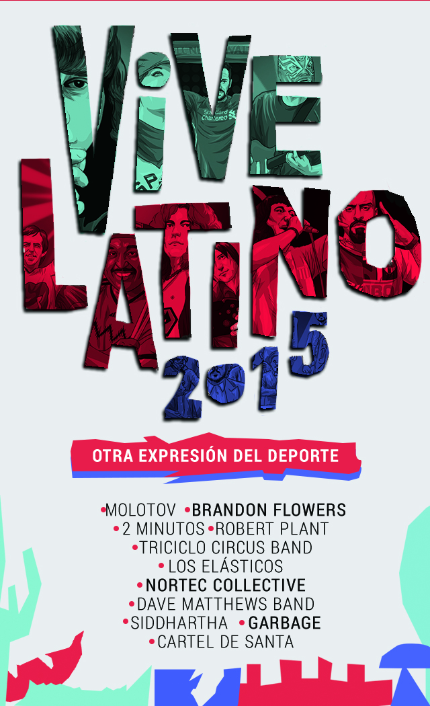
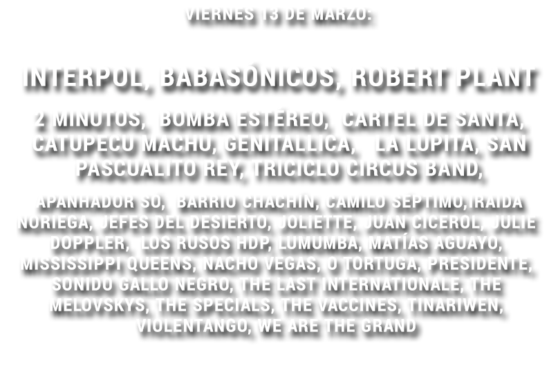
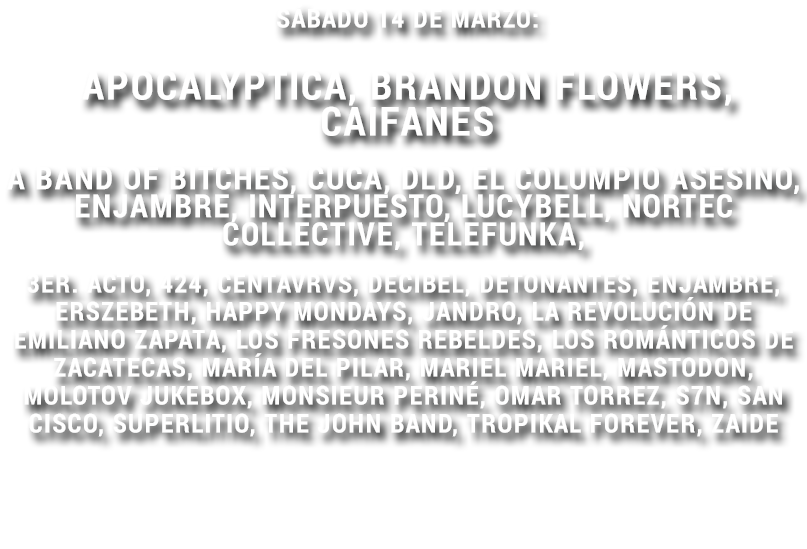
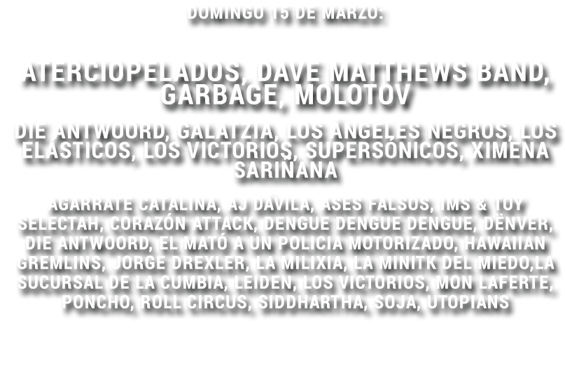

;){kind=link}
El Etihad Stadium de Manchester corea el “Hey Jude” escrita por Paul McCartney, mientras el Estadio Caliente de Tijuana corea “¿Dónde están perros?” de Cartel de Santa. La distancia que separa a estos dos equipos es proporcional al nivel futbolístico de sus jugadores, pero la música es un punto de unión más allá de que los dos son equipos de futbol.
El Vive Latino se ha convertido en una tradición musical de la Ciudad de México. Así como su alineación ha integrado artistas británicos en los últimos años, el futbol mundial ha ido incorporando la música como uno de sus símbolos de identidad. La popularización de la imagen del deportista con audífonos se acompaña muchas veces de deportistas que quisieron ser músicos. Los protagonistas del Vive Latino nos recuerdan que existe una estrecha relación de la música con el deporte, y al revés.
El Vive Latino se ha convertido en una tradición musical de la Ciudad de México. Así como su alineación ha integrado artistas británicos en los últimos años, el futbol mundial ha ido incorporando la música como uno de sus símbolos de identidad. La popularización de la imagen del deportista con audífonos se acompaña muchas veces de deportistas que quisieron ser músicos. Los protagonistas del Vive Latino nos recuerdan que existe una estrecha relación de la música con el deporte, y al revés.

Triciclo Circus Band musicaliza al deporte
 Triciclo Circus Band puede tocar folk, tarantela, polka, gypsy, danzón, tango, clown o todo lo anterior mezclado. Pero cuando juanfutbol le pide que interprete una canción que pueda musicalizar algún deporte, hay minutos de debate.
Los integrantes se miran entre sí, lo discuten. Alejandro Preisser, compositor de la banda, asegura que siempre que ve películas de deportes "se acompañan de rock o metal, rápido". El saxofonista, Pedro Krustovsky intenta tararear un ritmo, pero sin querer emula el soundtrack de 'Popeye el marino'.
Triciclo Circus Band puede tocar folk, tarantela, polka, gypsy, danzón, tango, clown o todo lo anterior mezclado. Pero cuando juanfutbol le pide que interprete una canción que pueda musicalizar algún deporte, hay minutos de debate.
Los integrantes se miran entre sí, lo discuten. Alejandro Preisser, compositor de la banda, asegura que siempre que ve películas de deportes "se acompañan de rock o metal, rápido". El saxofonista, Pedro Krustovsky intenta tararear un ritmo, pero sin querer emula el soundtrack de 'Popeye el marino'.
Al final, el compás improvisado que acompañaría a alguna épica batalla de deporte surge, y es tan divertido como lo es toda la música que los ha caracterizado y que los llevó a participar como uno de los grupos más atractivos en esta edición del Vive Latino.
JF: En el año 2012 fue la primera vez que se presentaron en el festival, y estuvieron en una de las carpas, pues aún eran una banda que tocaba en las calles del Centro Histórico. ¿Qué se siente tres años después presentarse en el escenario principal?
Nosotros no soñábamos con esto, pensábamos en la realidad del momento, de hacer música que es lo que nos apasiona. Salíamos a las calles a que nos escucharan, a divertirnos y hacer lo que nos satisfacía. Ahora estamos aquí y nos damos cuenta de que quizá algún día podamos llenar cualquier lugar, incluso un estadio.
Triciclo ya ha pisado más de cinco recintos deportivos. En diferentes festivales les ha dado vida con su música...
Es imponente tocar en un estadio, pero musicalmente es complicado. Por una parte la acústica no está diseñada para ello, pero por otro lado los estadios son los escenarios en los puedes llegar a más gente. Entendemos la importancia de un recinto como lo es el Estadio Azteca, pero al final nosotros lo vemos como un lugar para compartir nuestra música.
¿Qué esperamos para el Vive Latino de la banda con más folklore musical?
Tenemos muchas sorpresas, preparamos un dinámico espectáculo a nuestro estilo, algo más visual, queremos ofrecer un buen show a nuestros seguidores y al público que no nos conoce, porque ser parte del Vive nos da la oportunidad de tener una mayor proyección a nivel nacional.
¿Todos se imaginaban haciendo música o como muchos niños alguno soñó con ser futbolista?
Alejandro Preisser: Yo hice atletismo algunos años cuando era muy niño, hice 100 metros planos, salto de altura y de longitud. En la secundaria hice basquetbol.
¿En qué momento elegiste a la música en lugar del convertirte en un atleta?
Cuando me volví gordo (risas). Ya no tuve tiempo de entrenar porque entré a la preparatoria y me apasionaba más la música, entonces preferí dedicar mi tiempo libre a esto.
Nosotros no soñábamos con esto, pensábamos en la realidad del momento, de hacer música que es lo que nos apasiona. Salíamos a las calles a que nos escucharan, a divertirnos y hacer lo que nos satisfacía. Ahora estamos aquí y nos damos cuenta de que quizá algún día podamos llenar cualquier lugar, incluso un estadio.
Triciclo ya ha pisado más de cinco recintos deportivos. En diferentes festivales les ha dado vida con su música...
Es imponente tocar en un estadio, pero musicalmente es complicado. Por una parte la acústica no está diseñada para ello, pero por otro lado los estadios son los escenarios en los puedes llegar a más gente. Entendemos la importancia de un recinto como lo es el Estadio Azteca, pero al final nosotros lo vemos como un lugar para compartir nuestra música.
¿Qué esperamos para el Vive Latino de la banda con más folklore musical?
Tenemos muchas sorpresas, preparamos un dinámico espectáculo a nuestro estilo, algo más visual, queremos ofrecer un buen show a nuestros seguidores y al público que no nos conoce, porque ser parte del Vive nos da la oportunidad de tener una mayor proyección a nivel nacional.
¿Todos se imaginaban haciendo música o como muchos niños alguno soñó con ser futbolista?
Alejandro Preisser: Yo hice atletismo algunos años cuando era muy niño, hice 100 metros planos, salto de altura y de longitud. En la secundaria hice basquetbol.
¿En qué momento elegiste a la música en lugar del convertirte en un atleta?
Cuando me volví gordo (risas). Ya no tuve tiempo de entrenar porque entré a la preparatoria y me apasionaba más la música, entonces preferí dedicar mi tiempo libre a esto.
Ahora pasa todo lo contrario, Triciclo Circus Band va de tocada en tocada y cuando tiene un tiempo libre aprovecha para hacer algún tipo de deporte. "En un toquín privado en Cuernavaca, teníamos un descanso y nos acostamos en una canchita. Entonces vimos un coco tirado y decidimos jugar un partido de americano". Un integrante recuerda que se salió a medio partido porque "no daba una", otro recuerda los golpes que recibió y justo en ese momento es en el que caen en cuenta que lo de ellos no es otra cosa que no sea la música.
Brandon Flowers y el equipo que lo cambió
 * Es la primera vez que se presentan en el VL.
* Es la primera vez que se presentan en el VL.
¿Cuánto puede influir una ciudad en una persona? Brandon Flowers, nacido en Las Vegas, le debe mucho a Liverpool. Fue en esta ciudad inglesa en donde nació la banda que mayor lo influenció musicalmente, The Beatles.
Flowers pasó tiempo en Inglaterra con su grupo, The Killers, en una gira que recorrió las principales ciudades del Reino, y fue allí donde la banda consiguió sus primeros éxitos musicales. Al compartir escenario con la banda liverpuliana The Black Velvets, cuyo baterista Nick Kilroe es un gran aficionado de los Reds, Flowers se contagió del amor de Kilroe por los de Anfield, al grado de convertirse en seguidor.
Brandon Flowers ha demostrado su amor por los Reds en declaraciones, o portando una bufanda en la que se leía un: "This is Anfield". El vocalista de The Killers fue tan influenciado por la ciudad y los Beatles que terminó siendo fanático del mismo equipo que apoyaba John Lennon y George Harrison.

Cartel de Santa, el grupo que une a Tijuana con Monterrey
En la frontera, el hip hop le pone ritmo al futbol. Después de que el cronista del Estadio Caliente grita "Tijuana, aquí está tu equipo", Cartel de Santa se adueña de las gargantas de más de 10,000 aficionados. '¿Dónde están, perros?', entonan en coro.
 No se sabe a quién se le ocurrió volver esta canción el himno que da la bienvenida a los jugadores de Xolos, ahora todo un clásico del Caliente, pero, desde que el club ascendió a Primera División, es cada vez más común encontrar fans con la playera rojinegra en los conciertos del Cartel o escuchar canciones del grupo en cualquier parte de Tijuana.
No se sabe a quién se le ocurrió volver esta canción el himno que da la bienvenida a los jugadores de Xolos, ahora todo un clásico del Caliente, pero, desde que el club ascendió a Primera División, es cada vez más común encontrar fans con la playera rojinegra en los conciertos del Cartel o escuchar canciones del grupo en cualquier parte de Tijuana.
Babo, el vocalista, heredó el amor por el Monterrey. "Mi abuelo es rayado, mi padre es rayado, crecí viendo los juegos como muchos regios. Desde ese momento me encantaba el equipo, me enamoré de él". Pero el destino puso a Xolos en su camino. De hecho, el último recuerdo que tiene de un estadio es un concierto en el Caliente. Tanto fue el cariño que Babo recibió de la gente de Tijuana que decidió lucir la playera de 'La Jauría'. Quizá Babo heredó la afición por el Monterrey, pero Xolos y Cartel han creado un lazo emocional… el de la música que entona el futbol.
Los Elásticos: Rock desde la tercera cuerda

Entrenaba para ser luchador, por gusto, para ver qué se sentía, y sus aptitudes hicieron que considerara comenzar una carrera profesional en el pancracio. También practicaba música, por lo que al final Satanic tuvo que elegir entre ambas carreras, igual de desgastantes, igual de demandantes, donde se tenía que 'rifar el físico' para que el público le aplaudiera. Prefirió la música surf y la guitarra, pero eso sí, decidió que no se quitaría la máscara.
Satanic encontró en Corsario Jr, Passenji y Flanger el complemento perfecto para vivir su pasión del rock y las luchas. Los cuatro enmascarados conformaron a los Elásticos y con su surf homenajean a los grandes del encordado.
Blue Demon, Atlantis, o los Villanos, han servido de inspiración para canciones como "Demonio Azul". La banda regresa al Vive Latino a transformar en ring el escenario.

A diferencia del futbol, nosotros nos ganamos al fan: Siddhartha
Siddhartha no tiene ninguna afición por los deportes. Muy de vez en cuando practica raquetbol, pero explica para juanfutbol que la música y el deporte "son mundos distintos que conviven".
 "Digo que conviven porque, por ejemplo, escucho rock argentino y sin duda alguna me doy cuenta que ese estilo de música encontró en el futbol su inspiración, así hay muchos géneros. También pienso que los atletas o compositores, ya sea en el deporte o la música, encuentran un medio de expresión, un arte con el que sacan su energía, dedican su vida a ello y las dos son actividades muy parecidas; ambas son absorbentes, requieren de entrega total y te apasionan de una manera inexplicable", asegura.
"Digo que conviven porque, por ejemplo, escucho rock argentino y sin duda alguna me doy cuenta que ese estilo de música encontró en el futbol su inspiración, así hay muchos géneros. También pienso que los atletas o compositores, ya sea en el deporte o la música, encuentran un medio de expresión, un arte con el que sacan su energía, dedican su vida a ello y las dos son actividades muy parecidas; ambas son absorbentes, requieren de entrega total y te apasionan de una manera inexplicable", asegura.
Siddhartha es originario de Guadalajara, tocaba la batería para el grupo Zoé, pero en 2007 decidió emprender su carrera como solista. Le preguntamos por qué si radica en una ciudad tan futbolera no tiene un equipo predilecto, le explicamos que así como él necesita del apoyo de los fans, los clubes de futbol también lo requieren.
Su respuesta es instantánea, después de algunas risas: "En el caso del fan, sí creo que es diferente porque en el futbol el equipo puede ser heredado, además puedes apoyar a algún equipo independientemente de qué tan mal o qué tan bien este jugando. En cambio, en la música el seguidor te elige porque le gusta tu trabajo y te lo ganas, esta afición no es ciega ni incondicional, aquí te ganas al fanático con la obra y si pierdes a alguien es muy difícil de recuperar. En la música al "aficionado" te lo ganas, con cada canción, cada concierto, siempre tienes que estar a la altura de las expectativas del escucha y si alguien deja de conectar con lo que haces fácilmente te puede abandonar".
"En el futbol el equipo puede ser heredado, en la música el seguidor te elige porque le gusta tu trabajo"
Siddhartha

Dave Matthews Band, los coleccionistas de jerseys
* Es la primera vez que se presentan en el VL.
Desde pequeño, Carter Beauford se enamoró de la batería. Aprendió a tocar con maestría el instrumento, participó en varias bandas, y al final fue miembro y fundador de Dave Matthews Band.
 A pesar de su éxito, de su otra pasión, el futbol, nunca se olvidó. Aprovechó las ventajas de salir de gira con la banda para así comenzar a coleccionar jerseys. Galaxy, Benfica, Milan, Ajax y Vasco da Gama son algunas de las playeras que forman parte de su extensa colección, la cual aumenta por los regalos que le hacen sus fanáticos de diversas partes del mundo.
A pesar de su éxito, de su otra pasión, el futbol, nunca se olvidó. Aprovechó las ventajas de salir de gira con la banda para así comenzar a coleccionar jerseys. Galaxy, Benfica, Milan, Ajax y Vasco da Gama son algunas de las playeras que forman parte de su extensa colección, la cual aumenta por los regalos que le hacen sus fanáticos de diversas partes del mundo.
Estos lazos de futbol y música son recíprocos. Dave Matthews Band también ha sabido ganarse el corazón de los coleccionistas de camisetas, el grupo vende jersey para los aficionados pamboleros, eso sí, estampadas con el logo del grupo y el nombre de Beauford.
Desde pequeño, Carter Beauford se enamoró de la batería. Aprendió a tocar con maestría el instrumento, participó en varias bandas, y al final fue miembro y fundador de Dave Matthews Band.
A pesar de su éxito, de su otra pasión, el futbol, nunca se olvidó. Aprovechó las ventajas de salir de gira con la banda para así comenzar a coleccionar jerseys. Galaxy, Benfica, Milan, Ajax y Vasco da Gama son algunas de las playeras que forman parte de su extensa colección, la cual aumenta por los regalos que le hacen sus fanáticos de diversas partes del mundo.
Estos lazos de futbol y música son recíprocos. Dave Matthews Band también ha sabido ganarse el corazón de los coleccionistas de camisetas, el grupo vende jersey para los aficionados pamboleros, eso sí, estampadas con el logo del grupo y el nombre de Beauford.
2 Minutos, la banda que nació gracias al futbol

El álbum 'Valentin Alsína' lleva el futbol como alma. Para el primer disco de la banda 2 Minutos, su vocalista Walter 'Mosca' Velázquez sólo podía pensar en hacer música, beber cerveza y alentar al Racing de Avellaneda.
50,000 copias vendió aquella producción musical, mezcla de futbol y punk. "Carlos se vendió al barrio de Lanús, el barrio que lo vio crecer. Ya no vino nunca más por el bar de Fabián y se olvidó de pelearse los domingos en la cancha", se coreaba en sus primeras actuaciones. 'Ya no sos igual', una canción dedicada a un hincha que abandonó el futbol para ser policía, fue el éxito que los llevó a la fama.
"La verdad es que Mosca no canta ni cantaba nada, por más onda que le ponga, pero igual se le respetaba, son capos (líderes) de hace tiempo en Racing. Me acuerdo que una vez en un concierto le gritaron 'puto te vas a la B', pues 'La Academia' jugaba la promoción, y Mosca le dijo ”chúpala, aguante Racing y si no te gusta, lárgate', casi se agarra a las piñas (golpes) con ese fan. Por esas cosas los hinchas le respetan", asegura un integrante de la Guardia Imperial, barra del club argentino.
A 21 años de la salida de su primer producción musical, Mosca ya no se ve como hincha de Racing, no va más a la cancha, y cuando va es para ocuparla de escenario, pero nunca olvida que su puerta al éxito fue un cassette con esencia de futbol.
Nortec Collective, el ritmo del futbol

Cuando comenzabas a jugar FIFA 2005, mientras elegías a tu equipo favorito, lo primero que escuchabas de fondo eran los ritmos norteños de la canción ‘Almada’ de Nortec. Si cambiabas de videojuego por el FIFA World Cup 2006 y perdías, no importaba, porque te ponías feliz con su canción: ‘Tijuana makes me happy’.
Finalmente, si lo que querías era relajarte y ponías el FIFA Street 2 para tirar unos caños y meter goles increíbles, los regates que conseguías con Ronaldinho se complementaban con el ritmo de ‘Tijuana Bass’.
Videojuegos, la película Rudo y Cursi e incluso la inauguración de los Juegos Panamericanos Guadalajara 2011, utilizaron el sonido del colectivo originario de Tijuana. La música norteña-electrónica de Nortec Collective se convirtió en el soundtrack favorito del deporte.

Garbage: La admiradora secreta de Duncan
 * Es la primera vez que se presentan en el VL.
* Es la primera vez que se presentan en el VL.
La vocalista de Garbage, Shirley Manson, enamora a los fans con su música, voz y belleza. Ella es el amor platónico de muchos seguidores de la banda, y ella descubrió al suyo en el deporte ráfaga. Mientras Shirley grababa el disco Beautiful Garbage, durante una pausa para distraerse miró la televisión y vio a Tim Duncan cobrando tiros libres con los San Antonio Spurs.
En ese instante quedó impresionada por el jugador. Pensó que tenía un rostro maravilloso, le atrajo su serenidad y que mostraba una personalidad totalmente opuesta a la de ella. También se sintió identificada con los Spurs, porque eran "un grupo de jugadores raros" comandados por el "imperturbable Duncan".
Desde ese momento Shirley Manson se volvió fanática del basquetbol y de Tim Duncan, asiste continuamente a los partidos, y aunque tenía la oportunidad de conocerlo prefería seguir imaginándolo perfecto e inalcanzable.
Robert Plant y la fiesta del Wolverhampton
* Es la primera vez que se presentan en el VL.
Era 1974, la ciudad de Wolverhampton estalló de felicidad porque su equipo, que lleva el mismo nombre, consiguió la Capital One Cup. Ese mismo año, la mítica banda Led Zeppelin se tomó un descanso de su frenética combinación de grabaciones y giras para dedicarse a componer.
El vocalista Robert Plant, que desde que tenía cinco años llevaba al equipo tatuado en el alma, se tomó muy en serio la idea del descanso con la agrupación. Cuando vio que su equipo se había hecho del campeonato, Plant no lo pensó más y salió a festejar.
Era 1974, la ciudad de Wolverhampton estalló de felicidad porque su equipo, que lleva el mismo nombre, consiguió la Capital One Cup. Ese mismo año, la mítica banda Led Zeppelin se tomó un descanso de su frenética combinación de grabaciones y giras para dedicarse a componer.
El vocalista Robert Plant, que desde que tenía cinco años llevaba al equipo tatuado en el alma, se tomó muy en serio la idea del descanso con la agrupación. Cuando vio que su equipo se había hecho del campeonato, Plant no lo pensó más y salió a festejar.

Dos días después, su esposa, Maureen Wilson, se presentó en la comisaría para denunciar a Plant como desaparecido. Al día siguiente, la estrella de rock apareció a las puertas de su casa sin recordar lo ocurrido, excepto que el club de sus amores había sido campeón.
Después de ese año vino el declive. Led Zeppelin se desintegraría tras la muerte del baterista, John Bonham, y el conjunto inglés se iría al descenso. Pero Plant no dejaría ir tan fácil las dos partes más importantes de su vida; en 1982 grabó su disco solista y diecisiete años más tarde se convertiría en presidente honorario del equipo de futbol.
Molotov: Orgullo azul (crema) y oro
Si los clubes mexicanos tuvieran bandas de rock que los representaran, sin duda la de Pumas sería Molotov. El grupo conformado por Micky Huidobro, Tito Fuentes, Randy Ebright y Paco Ayala ha desarrollado su carrera de la mano con el futbol.
Huidobro, miembro fundador de Molotov, es uno de los más grandes aficionados del equipo universitario. Jugó en Pumitas cuando era un niño, y aunque abandonó la idea de ser futbolista profesional por la música, fue aquí donde nació su amor por los colores auriazules.

Huidobro, miembro fundador de Molotov, es uno de los más grandes aficionados del equipo universitario. Jugó en Pumitas cuando era un niño, y aunque abandonó la idea de ser futbolista profesional por la música, fue aquí donde nació su amor por los colores auriazules.
Tanto cariño le profesa a sus Pumas que hasta les ha dedicado dos discos, Muchachitos de Porra I y II, donde homenajea al equipo, su cantera y a jugadores emblemáticos como Sergio Bernal y Darío Verón.
Molotov también estuvo presente en una reciente rivalidad que se formó en el futbol mexicano: Pumas vs Chivas. Después del campeonato en el que los felinos vencieron al rebaño y de los desplegados de Jorge Vergara, el grupo creó la canción “Me vale Vergara”, la cual criticaba la forma de ser del dueño de Chivas.
Molotov también estuvo presente en una reciente rivalidad que se formó en el futbol mexicano: Pumas vs Chivas. Después del campeonato en el que los felinos vencieron al rebaño y de los desplegados de Jorge Vergara, el grupo creó la canción “Me vale Vergara”, la cual criticaba la forma de ser del dueño de Chivas.
Por si fuera poco, la 'Molocha', como también se les conoce, compartió cuadro con Rafa Márquez y ‘Kikín’ Fonseca en un comercial de Pepsi para el Mundial 2006 y con Televisa Deportes en una campaña "Queremos ver golazos", la cual nunca salió al aire por el albur que expresaba.
Y aunque les duela, Molotov tiene algo en común con el odiado rival de Pumas, América. El bajista de la banda, Paco Ayala, es ferviente seguidor de las águilas.
Y aunque les duela, Molotov tiene algo en común con el odiado rival de Pumas, América. El bajista de la banda, Paco Ayala, es ferviente seguidor de las águilas.